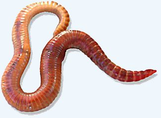

कम्पोस्ट केंचुआRed Worm
Eisenia fetida · Lumbricidae · SFL-0004

- Scientific name
- Eisenia fetida (Savigny, 1826)
- Family
- Lumbricidae
- Hindi
- कम्पोस्ट केंचुआ
- Status here
- cultivated
- IUCN
- not evaluated
When to look कब देखें
Present all year.
कम्पोस्ट केंचुआ / Red Worm
Eisenia fetida (Savigny, 1826) — Lumbricidae
कम्पोस्ट केंचुआ (रेड विगलर / टाइगर वर्म) — जैविक कचरे के अपघटन और केंचुआ खाद (vermicompost) बनाने के लिए दुनिया भर में सबसे लोकप्रिय केंचुआ है। इसका रंग गहरे लाल-बैंगनी से लेकर भूरा होता है, जिस पर पीले रंग की आड़ी पट्टियां होती हैं, जिससे यह थोड़ा धारीदार (tiger-striped) दिखाई देता है। मूल रूप से यूरोप का होने के बावजूद, अब यह पूर्वी उत्तर प्रदेश के गांवों में सरकारी योजनाओं और निजी तौर पर तैयार किए गए वर्मीकम्पोस्ट बेड (vermicompost units) में व्यापक रूप से पाला (cultivated) जाता है। यह केंचुआ सतह के पास रहता है (epigeic species) और गहरे गड्ढे खोदने के बजाय केवल गोबर और सड़े-गले पत्तों को बहुत तेजी से खाता है। छेड़े जाने पर यह अपने शरीर से एक दुर्गंधयुक्त, पीला तरल पदार्थ छोड़ता है, जिससे इसे वैज्ञानिक नाम "fetida" (बदबूदार) मिला है।
Quick Identification त्वरित पहचान
| Feature | Description |
|---|---|
| Size | Small to medium worm; body length 60–120 mm; diameter 3–5 mm |
| Colour | Reddish-purple to dark red, with alternating pale yellow rings between segments (tiger-like stripes) |
| Segments | 80–120 segments; body is cylindrical and slightly flattened at the rear |
| Clitellum | Thickened pale ring located around segments 24–32; prominent in adult worms |
| Movement | Active wiggler; moves rapidly when exposed to light, thrashing its body |
| Habitat | Found strictly in rich organic compost, manure piles, and vermi-beds; does not burrow into normal garden soil |
| Odour | Releases a pungent, yellowish, foul-smelling coelomic fluid when handled or squeezed |
Field tip: Any red-brown earthworm with distinct yellow stripes between its segments found inside a cow dung compost bed is a Red Worm (Eisenia fetida). It is much smaller and more active than the common native field earthworm.
Morphology आकारिकी
Biometrics (typical measurements for specimens reared in vermi-beds in eastern UP):
| Measurement | Range |
|---|---|
| Body length | 60–120 mm |
| Weight | 0.3–0.6 g |
Segmented stripes: The dorsal side has a dark red, reddish-purple, or brown coloration. The grooves between segments lack pigment, showing the pale yellow or cream-coloured circular bands underneath, giving the worm a striped or banded appearance. The ventral side is pale.
Clitellum: The reproductive saddle (clitellum) is located toward the anterior end, typically covering segments 24 to 32. It is saddle-shaped and lighter in colour than the rest of the body.
Setae: Each segment carries eight small, retractile, bristle-like setae arranged in pairs on the lower side, which are used to grip the compost substrate.
Behaviour & Ecology व्यवहार और पारिस्थितिकी
Epigeic decomposer.
- Surface dweller (epigeic): Unlike native earthworms, Eisenia fetida does not burrow deep into mineral soil layers. It lives and feeds entirely in the upper, organic-rich layer (compost, leaf litter, and decaying manure).
- Reproductive capacity: Highly prolific. In optimal moisture (60–80%) and temperature (15–25°C), it reproduces rapidly, with adults producing up to two cocoons per week.
- Defensive secretion: When irritated, it ejects coelomic fluid from dorsal pores. The fluid contains lysenin, a protein toxic to small predators like ants and frogs, and has a strong, pungent odour.
Life Cycle / Phenology जीवन चक्र
- Breeding: Occurs year-round under managed composting conditions with stable moisture. The worms mate through cross-fertilization.
- Cocoon formation: Following mating, each worm secretes a lemon-shaped, yellow-to-brown cocoon (3–4 mm long) containing 2 to 20 eggs.
- Hatching & Growth: The cocoons hatch in 18–25 days. The hatchlings are tiny, pale pink, and lacking a clitellum. They reach sexual maturity in 45–60 days under ideal conditions.
- No larval stage: The young hatch as miniature, fully formed worms (direct development).
- Lifespan: 1–3 years in compost beds.
Host Plants or Prey आहार
Organic waste diet:
- Decomposing material: Primary diet consists of decomposing cow manure, organic kitchen waste, leaf litter, and crop residues.
- Microbial consumer: Feeds heavily on the bacterial and fungal biofilms growing on decaying organic matter, digesting the microbes along with the waste.
Predators / Natural Enemies शत्रु
- Compost pests: Predatory centipedes (
[MYR-0001 Indian Centipede]), ground beetles, and large ants ([INS-0039 Tropical Fire Ant]) raid vermi-beds and eat the worms. - Vertebrate predators: Domestic poultry, frogs, toads (
[AMP-0001 Common Toad]), and house shrews ([MAM-0015 Asian House Shrew]) consume them if the beds are left uncovered.
Agricultural / Human Relevance कृषि प्रासंगिकता
Engine of vermicomposting.
- Vermi-khad production: Eisenia fetida is the primary species used in rural UP's vermi-khad (vermicompost) projects. It converts raw cattle dung and agricultural waste into high-quality organic fertiliser rich in nitrogen, phosphorus, and potassium.
- Waste management: Farmers use these worms to recycle rice straw and crop waste, preventing the harmful practice of stubble burning.
- Pesticide sensitivity: Extremely sensitive to chemical pesticide residues in crop waste. If pesticide-treated leaves are added to the compost bed, it can cause high mortality in the worm population.
Expected Locally स्थानीय रूप से अपेक्षित
Not a field record. Written from published accounts for eastern Uttar Pradesh. No confirmed local sighting yet — if you have seen it, that is what the atlas needs.
अभी तक स्थानीय पुष्टि नहीं। यह विवरण प्रकाशित स्रोतों से है, किसी अवलोकन से नहीं।
Abundant in the vermicompost demonstration beds operated by the Agricultural Extension Centers (Krishi Vigyan Kendra - KVK) and progressive farmers in Vikramjot, Basti. They are rarely found in wild agricultural soils unless organic compost has been applied recently, as they cannot survive in dry mineral soils.
Distribution वितरण
Global range: Native to Europe, but has been introduced globally due to its commercial value in organic farming. It is now found worldwide in agricultural composting systems.
In India: Cultivated throughout all states, particularly in agricultural zones practicing organic farming.
In Uttar Pradesh: Present in all districts within government-sponsored and private vermicompost units.
In Basti district / eastern UP: Cultivated resident; found in compost bins and vermi-beds in rural households.
Research Questions शोध प्रश्न
- How does the reproduction rate of Eisenia fetida compare when fed on cow dung versus buffalo dung in local Basti compost units? / स्थानीय केंचुआ खाद इकाइयों में गाय के गोबर बनाम भैंस के गोबर पर कम्पोस्ट केंचुए की प्रजनन दर में क्या अंतर होता है?
- What is the maximum soil temperature Eisenia fetida can tolerate in compost beds during the peak summer heat (May) in Basti? / बस्ती में गर्मियों की अत्यधिक गर्मी (मई) के दौरान यह केंचुआ अधिकतम कितना तापमान सहन कर सकता है?
- Does the addition of mustard oil cake residue to vermi-beds affect the growth rate of Eisenia fetida?
- How does the nitrogen content of vermicompost produced by Eisenia fetida compare with that of conventional pit compost?
- Can farmers identify compost pests (like ants and centipedes) in their vermi-beds and implement organic control methods? — A practical farmer-led research topic.
Similar Species मिलती-जुलती प्रजातियाँ
| Species | How to tell apart |
|---|---|
Metaphire posthuma (Indian Common Earthworm [SFL-0002]) | Native. Larger (10–25 cm); uniform dark reddish-brown colouration without yellow stripes; burrows deep into mineral soil; does not survive well in pure manure. |
| Eudrilus eugeniae (African Nightcrawler) | Larger (15–20 cm); dark purple-bronze colouration; lacks the tiger-stripes; prefers warmer temperatures; commonly co-reared. |
| Perionyx excavatus (Blue Worm) | Native to Asia; has a bluish-violet iridescent sheen; runs very fast; lacks yellow stripes; common in wild wet compost. |
Taxonomy & Classification वर्गीकरण
Original description. Jules-César Savigny described the Red Worm as Enterion fetidum in 1826 in Mémoires de l'Académie Royale des Sciences de l'Institut de France (Vol. 5, p. 182). The type locality was Paris, France. It was later placed in the genus Eisenia Malm, 1877. The genus was named in honour of Gustaf Eisen, the Swedish-American oligochaetologist. The specific name fetida is Latin for "foul-smelling," referring to the defensive secretion.
Subspecies. Monotypic. Previously, Eisenia andrei was considered a subspecies (E. fetida andrei), but molecular and breeding studies have shown them to be distinct sibling species.
Family and order placement. Placed in the order Crassiclitellata, suborder Lumbricina, family Lumbricidae.
Phylogenetic notes. Lumbricidae is a family of temperate earthworms. Eisenia fetida belongs to a group of surface-dwelling, litter-feeding species that have adapted to habitats with high concentrations of organic matter, representing an ecological shift away from deep burrowing.
IUCN status rationale. Not evaluated (NE) by the IUCN Red List. As a globally domesticated and commercially reared species with a population in the billions, it faces no conservation threats.
Photo Gallery फोटो गैलरी
References संदर्भ
- Savigny, J. C. (1826). Analyses des travaux de l'Académie Royale des Sciences pendant l'année 1821, partie physique. Mémoires de l'Académie Royale des Sciences de l'Institut de France, 5, 1–380. [original description]
- Stephenson, J. (1923). The Fauna of British India, including Ceylon and Burma. Oligochaeta. Taylor & Francis, London.
- Edwards, C. A. & Bohlen, P. J. (1996). Biology and Ecology of Earthworms. Chapman & Hall, London.
- Dominguez, J., et al. (2005). Are Eisenia fetida and Eisenia andrei (Oligochaeta, Lumbricidae) different species? Pedobiologia, 49(3), 257-261.
- Zoological Survey of India. State Fauna Series: Fauna of Uttar Pradesh — Oligochaeta. ZSI, Kolkata.
- GBIF Occurrence Data — Eisenia fetida (2026). GBIF taxon key: 5815560.
Source file: species/fauna/soil_fauna/red_worm.md